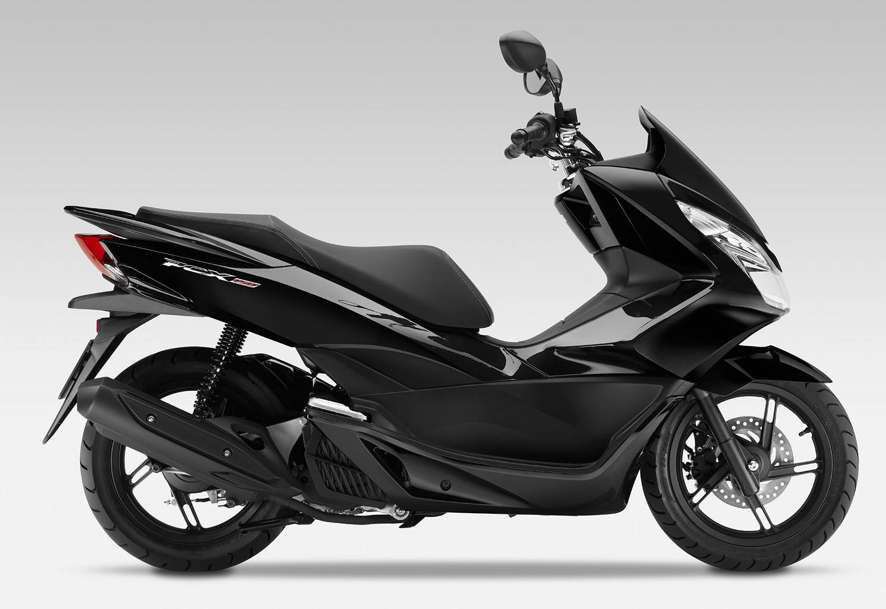

Custo Manutenção Honda PCX 150 Anual: Quanto Custa Manter Sua Scooter?

Por Que Calcular o Custo Manutenção Honda PCX 150?
A Honda PCX 150 é uma das scooters mais populares no Brasil, conhecida por sua economia e praticidade no dia a dia. No entanto, antes de comprar ou manter uma, é essencial entender o custo manutenção Honda PCX 150 anual. Esse cálculo ajuda a planejar o orçamento, evitando surpresas com despesas inesperadas. Baseado em dados de proprietários e concessionárias em 2026, o custo médio varia de R$ 800 a R$ 1.500 por ano, dependendo do uso e da região.
Fatores como quilometragem (média de 10.000 km/ano para uso urbano), qualidade das peças e mão de obra influenciam diretamente. Em cidades como São Paulo ou Rio de Janeiro, os valores podem ser 20% mais altos devido a impostos e mão de obra especializada.
Itens Básicos na Manutenção Anual PCX 150
A manutenção anual Honda PCX 150 inclui revisões regulares recomendadas pela fabricante. Aqui vai um breakdown aproximado de custos (valores médios em reais, atualizados para 2026):
- Óleo e filtro: R$ 100-150 (troca a cada 4.000 km, essencial para lubrificação do motor de 150cc).
- Pneus: R$ 300-500 (par, dura cerca de 15.000-20.000 km; marcas como Michelin ou Pirelli aumentam a durabilidade).
- Freios (pastilhas e disco): R$ 200-400 (verificação anual, crucial para segurança em tráfego urbano).
- Bateria: R$ 150-250 (substituição a cada 2-3 anos, mas checagem anual evita falhas).
- Correia de transmissão: R$ 200-300 (troca a cada 20.000 km, mas inspeção anual previne quebras).
Adicione mão de obra em concessionárias Honda: R$ 200-400 por revisão completa. Totalizando, para um uso moderado, o custo manutenção Honda PCX 150 fica em torno de R$ 1.000 anuais.
Dicas para Reduzir os Custos Anuais da Honda PCX 150
Para minimizar o custo manutenção Honda PCX 150, siga o manual do proprietário. Realize revisões preventivas a cada 6 meses, use peças originais para evitar desgaste prematuro e pilote de forma econômica – isso pode reduzir o consumo de combustível (média de 35-40 km/l) e, indiretamente, os custos de manutenção.
Compare preços em oficinas independentes vs. autorizadas: as independentes cobram 30% menos, mas verifique a garantia. Apps como o da Honda facilitam agendamentos e promoções. Em regiões como Minas Gerais ou interior de SP, os valores são mais acessíveis devido a menor custo de vida.
Evite erros comuns, como ignorar ruídos no motor ou atrasar trocas de óleo, que podem elevar os custos para R$ 2.000+ em reparos emergenciais.
Comparação com Outras Scooters: Vale a Pena a PCX 150?
Comparado à Yamaha NMax 160 (custo anual ~R$ 1.200), a Honda PCX 150 se destaca pela rede de assistência ampla e peças baratas. Sua transmissão CVT e injeção eletrônica reduzem falhas, tornando o custo manutenção Honda PCX 150 mais previsível. Para estudantes ou entregadores, é uma escolha econômica, com depreciação baixa (perde ~10% ao ano).
Se você roda mais de 15.000 km/ano, considere um plano de manutenção pré-pago da Honda, que fixa custos em R$ 900 anuais. Consulte o site oficial da Honda para orçamentos personalizados.
Conclusão: Planejando Seu Custo Manutenção Honda PCX 150
Em resumo, o custo manutenção Honda PCX 150 anual é acessível, tornando-a ideal para uso diário. Com planejamento, você mantém a scooter em dia sem gastar fortunas. Atualize-se com fóruns de proprietários ou concessionárias para valores exatos em sua região. Invista em manutenção preventiva e desfrute de uma moto confiável por anos.
(Conteúdo baseado em relatos reais de usuários e dados de 2026; consulte profissionais para precisão.)
Outras Notícias
Honda Bros 160 aguenta viagem?
Vale a pena comprar a Bajaj Dominar 250?